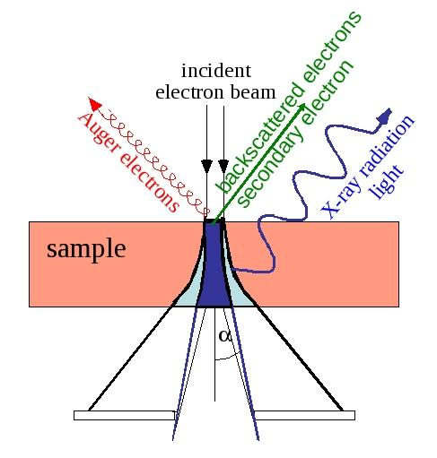
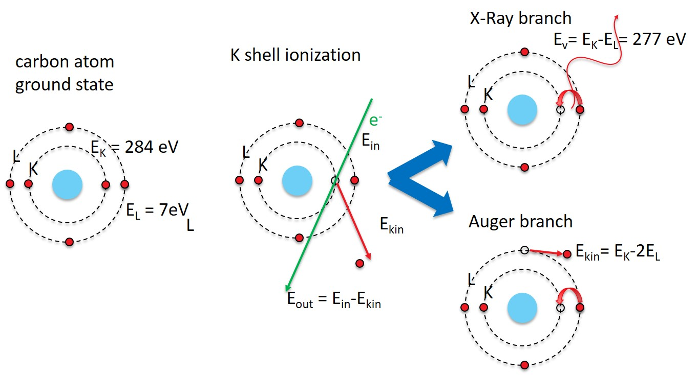
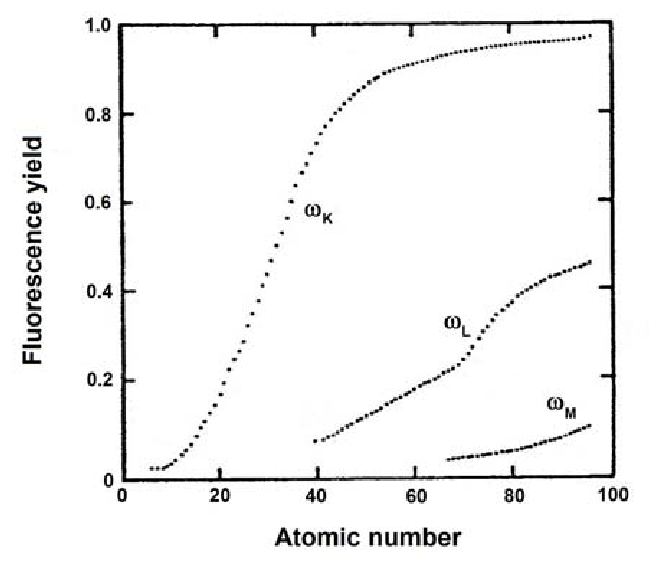
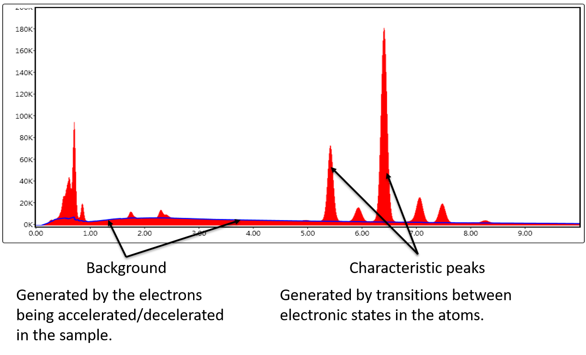

Chapter 4: Spectroscopy
Introduction to X-Rays¶

part of
MSE672: Introduction to Transmission Electron Microscopy
Spring 2026 by Gerd Duscher
Microscopy Facilities Institute of Advanced Materials & Manufacturing Materials Science & Engineering The University of Tennessee, Knoxville
Background and methods to analysis and quantification of data acquired with transmission electron microscopes.
Load relevant python packages¶
Check Installed Packages¶
[1]:
import sys
import importlib.metadata
def test_package(package_name):
"""Test if package exists and returns version or -1"""
try:
version = importlib.metadata.version(package_name)
except importlib.metadata.PackageNotFoundError:
version = '-1'
return version
if test_package('pyTEMlib') < '0.2026.1.1':
print('installing pyTEMlib')
!{sys.executable} -m pip install --upgrade pyTEMlib -q
print('done')
done
Load the plotting and figure packages¶
Import the python packages that we will use:
Beside the basic numerical (numpy) and plotting (pylab of matplotlib) libraries,
three dimensional plotting and some libraries from the book
kinematic scattering library.
[1]:
%matplotlib widget
import matplotlib.pyplot as plt
import numpy as np
import sys
import os
if 'google.colab' in sys.modules:
from google.colab import output
from google.colab import drive
output.enable_custom_widget_manager()
__notebook__ = 'CH4_12-Introduction_X_Rays'
__notebook_version__ = '2026_01_19'
Inelastic Scattering:¶
When a high energy electron collides with matter there are several process going on:

In an TEM and SEM there are quite a few inelastic signals available:
Secondary electrons
X-Rays
Auger electrons
Light (photons in visible range)
X-Rays¶
Here we consider only X-Rays and Auger Electrons as those originate from competing processes:

The excited atom has two possibilities to return to the ground state:
We consider the energy before and after the relaxation process. ### X-Ray branch The emitted photon has the energy of the energy gained in the relaxtion process. In the carbon atom case above, an electron from the 2p states relaxes to the 1s state: from the L\(_3\) to the K shell.
The energy difference of a photon is the \(E_K\) - \(E_L\), which is well in the X-ray range.
Please note that the transition from 2s to 1s is dipole forbidden and cannot occur.
Auger branch¶
The emitted electron leaves behind an atom with a closed K shell (\(-E_K\)) and looses two 2p electrons (\(+2 E_L\). This energy will be transfered to the Auger electron as kinetic energy $ E_{kin} = E_K-2E_L$
[2]:
##
E_K = 284 # in eV
E_L = 7 # in eV
print(f'X-ray photon has the energy {E_K-E_L} eV')
print(f'Auger electron has the kinetic energy {E_K-2* E_L} eV')
X-ray photon has the energy 277 eV
Auger electron has the kinetic energy 270 eV
Fluorescent Yield¶
The Auger and X-ray branches are not equally probable. In the carbon atom characteristic X-ray emission occurs at about 26% of the K-shell ionization.
The fraction that of the ionization that yields photons is called fluorescent yield \(\omega\).
The fluorescent yield is strongly dependent on the atomic number [E.A. Preoteasa et al. 2012 – ISBN 978-1-61470-208-5]:

The fluorescent yield follows approximatively an equation of the form:
with
\(Z\): atomic number
\(\alpha\): constant about 10\(^6\) for K lines
[3]:
Z = np.linspace(1,100,100)
alpha_K = 1e6
alpha_L = 6.5e7
alpha_M = 8*1e8#2.2e10
omega_K = Z**4/(alpha_K+Z**4)
omega_L = Z**4/(alpha_L+Z**4)
omega_M = Z**4/(alpha_M+Z**4)
plt.figure()
plt.plot(Z,omega_K, label='K')
plt.plot(Z,omega_L, label='L')
plt.plot(Z,omega_M, label='M')
plt.legend()
plt.xlabel('atomic number Z')
plt.ylabel('fluorescent yield $\omega$ [photons/ionization]')
plt.axhline(y=0., color='gray', linewidth=0.5);
## uncomment lines below for log scale
# plt.gca().set_yscale('log')
# plt.ylim(1e-4, 0.9)
Comparison¶
The data and formula agree quite well given the simplicty of the model.
[4]:
fname = './images/fluorescenceYield3.png'
im = plt.imread(fname)
Z = np.linspace(1,100,100)
alpha_K = .8e6
alpha_L = 4.5e7
alpha_M = 6*1e8#2.2e10
omega_K = Z**4/(alpha_K+Z**4.005)
omega_L = Z**4/(alpha_L+Z**4.1)
omega_M = Z**4/(alpha_M+Z**4)
plt.figure()
plt.imshow(im, cmap = 'gray', extent = (-25, 107,-.195,1.056))
plt.plot(Z,omega_K, label='K')
plt.plot(Z,omega_L, label='L')
plt.plot(Z,omega_M, label='M')
plt.legend()
plt.gca().set_aspect('auto')
#plt.axhline(y=0., color='gray', linewidth=0.5);
#plt.axhline(y=1., color='gray', linewidth=0.5);
#plt.axvline(x=0., color='gray', linewidth=0.5);
#plt.axvline(x=100., color='gray', linewidth=0.5);
plt.plot(np.arange(11,22,1) , [0.0192, 0.0265, 0.0357, 0.0470, 0.0604, 0.0761, 0.0942, 0.138, 0.163, 0.219, 0.250])
[4]:
[<matplotlib.lines.Line2D at 0x1fb178ded50>]
Energy Dispersive Spectrum¶
An energy dispersive X-ray spectrum (EDS)contains two different parts:

The Bremsstrahlung causes the background the characteristic X-ray peaks are sitting on.